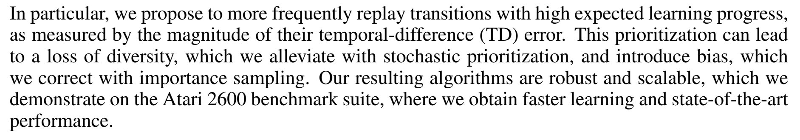
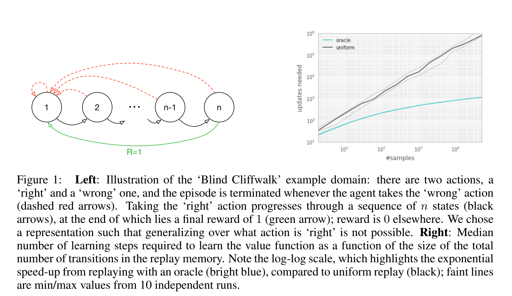
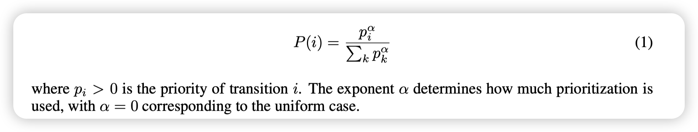
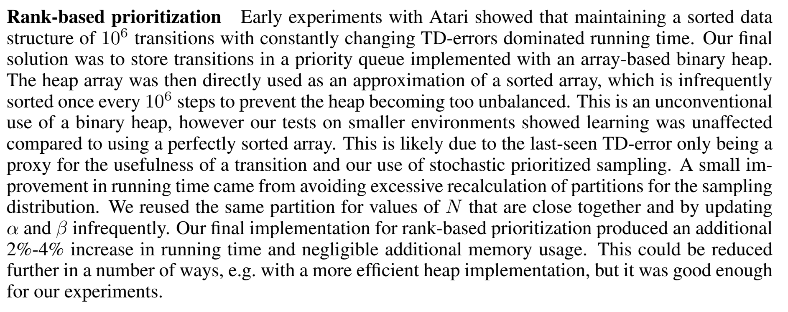
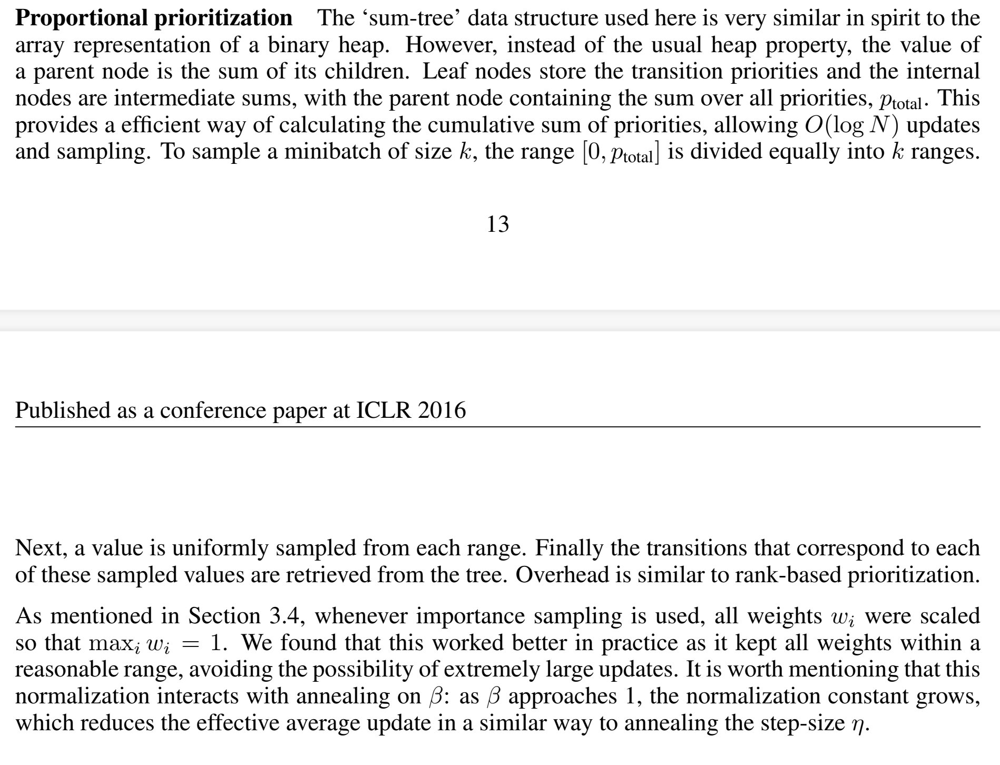
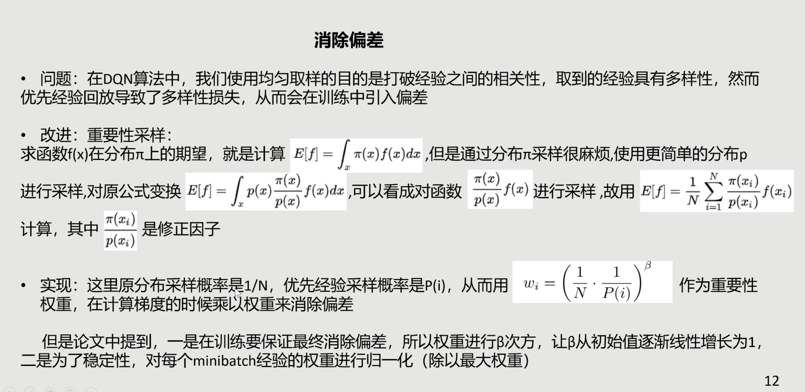
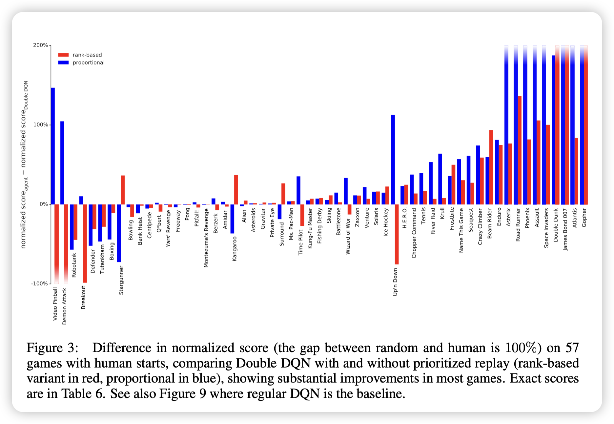
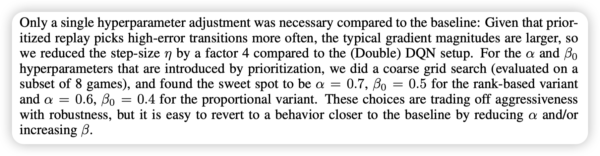
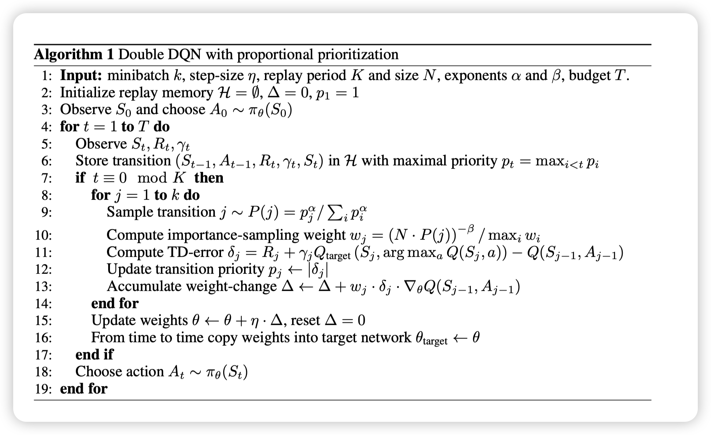
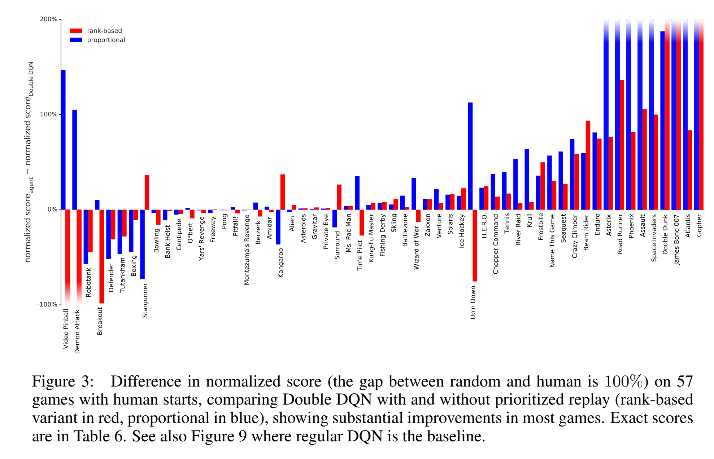

Prioritized Experience Replay
Prioritized Experience Replay
Experience replay的演化
online RL:缺点：经验之间是correlated的，不满足stochastic gradient-decent的要求。另外，有用的好经验被使用一次后就遗忘了。
普通的experience replay可以记下经验，然后抽样更新参数，这样一方面减少了对打量经验的需求，转而用更多的计算力和内存（经常比RL agent和环境交互更cheaper）
而Prioritized experience replay further liberates the agents from considering transitions with the same frequency that they are experienced.

一些tricks
总的来说，用TD error来衡量经验的重要性，但是这样有两个问题：
(a) loss of diversity，影响stochastic gradient descent的性能。
(b) introduce bias，需要我们用importance sampling去纠正。
这样一来可以更快，并且state-of-the-art
background: 过去有类似的方法，在supervised learning中有用positive/negative分别抽样去做replay，在某些特定领域这些做法也有较好但是表现。
现在我们对prioritized experience replay引入stochastic sampling，这样可以保持diversity，同时也可以加速并提升训练质量。
启发实验
在一个只有rare action才能有收益的环境中，考虑收益大的action是很有用得，因为一旦得到宝贵的分数，就可以据此来更新，而不是还要经历一个随机uniform抽样过程。

在log-log右图中，可以看到oracle的经验选择在指数上遥遥领先于uniform sampling。
理想的priority标准应该是RL从transition中学习的速度，但是这个值不能直接获得，一个合理的代替是用TD-error，which indicates how surprising a transition is.（但是对于reward有noise的情况可能会不太准）
和之前的uniform choose和oracle相比，TD-error-greedy-choose也能有指数级别的提升，同时为了保证至少抽样一次，在经验第一次加入时外面将其优先级设置为最高。
但是直接按照greedy-priority会有问题：
- TD-error较低的transition在很长时间不会再被replay
- 同时在reward有noise的情况下在bootstrapping中会恶化。
- diversity缺失，因为这样attention全在一个较小的subset里，意味着容易过拟合。
未来解决这些问题，我们在pure priority和uniform中平衡，我吗需要保证所有的transition都有大于0的概率被抽样，同时又要根据不同的TD-error设置不同的抽样概率。

其中平衡的degree由超参数决定。
其中就是我们设定的有限度。
的表示方法
两者都是随着单调的，但是后者更robust，因为和具体的量级不敏感。
实现上来看，因为N（经验回放数组）一般非常大，所以我们希望抽样k（batch）的时间与N无关。论文中采用分段抽样的方法，根据N，k，提前计算好分块，每次从k块里每个块uniformly抽一个，近似上述公式的抽样效果。
Rank-based prioritization

用数组实现的二叉堆确保大概是有序的，然后在上面做sample，同时隔一段时间sort一次防止过于不平衡。
Proportional prioritization

Importance sample
然而，使用prioritized 经验放回算法是有缺陷的，因为收敛正确性的假设与pure stochastic gradient decent有关，但是显然，即使上述修正过的优先抽样算法也会introduce bias，影响最后收敛的结果。
所以我们需要尽可能修正这个bias，和sutton书中off-policy中更具概率调整评估值比较相似。
（来自晨神summary）

当是1时，就是一个完全概率补偿，为了更稳定，所有都要乘以，确保小于1.
在最后一步计算梯度时，乘上即可。（优先度依然是按照pure TD-error计算。）
虽然保持为1可以是unbiased，但是这样会降低我们优先sampling的效果，所以我们采用退火的想法，从初始值(接近0的较小值)到最后的1，这样可以兼顾两者的好处。
同时importance sample还有一个好处，因为在deep network中一阶泰勒近似只在local field成立，步长不能太大，而优先TD-error一定是大的，但是引入importance sample和会被中和，对梯度下降也是好事。

实验制定
- 1e6经验空间
- 32batch 每次进4个
- reward和TD-error都被截断到 （更稳定）
- 其他结构和传统DQN相同
- 学习率下调4倍 因为相对梯度都比较大

rank形式的优先抽样会更好
- 分布图是heavy-tail，更保证抽样的diversity，同时minibatch gradient保持在一个相对稳定的大小。
- 在reward稀疏和noisy时候，不会太受影响，因为对相对error不敏感。
优先经验回放还有这样的好处：
- 确保至少抽到一次（对于没抽样的bonus）
- 不会太会只抽到一次，越旧的不会再更新，因为已经有很多机会更新了。越新的transition说明value evaluation越不准确。
总的来说，所提出的假设表明，在类别不平衡的数据集中，训练过程可能会无意中更加关注罕见类别，并且会策略性地选择来自常见类别的样本，以改善模型的性能，类似于硬负样本挖掘的效果。
一些思路拓展
- 制造很多并发但是异构的actor（不同的exploration hyperparameter），我们的优先度决策可以指导运算资源的分配。
内存里的优先经验存放的机制很灵活：
- 可以删除经验，因为以及被频繁访问的经验或者没有价值的经验没有用处了。
- 删除同时应该强调diversity，比如更具how old they are进行调节，已保留足够的旧经验来防止循环。
- 可以继承其他（如人类专家）的经验数据，如保留一定比列的外部经验。
diversity:
-
按照不同priority分开抽样
-
制定奖励分，一个transition越久不replay就越加分。（可以维护一个全局步数轻松实现）
-
Reverse replay: 发现一个change很大的s，我们反向拓展可能会到s的节点s’,调高s’的优先度。
实验结果
实现伪代码：

在数据不平衡时，优先度经验回放works
IS:让学习不再那么激进，在初始阶段会慢一些，但是更小概率会不成熟收敛，同时sometimes ultimately better results.
。